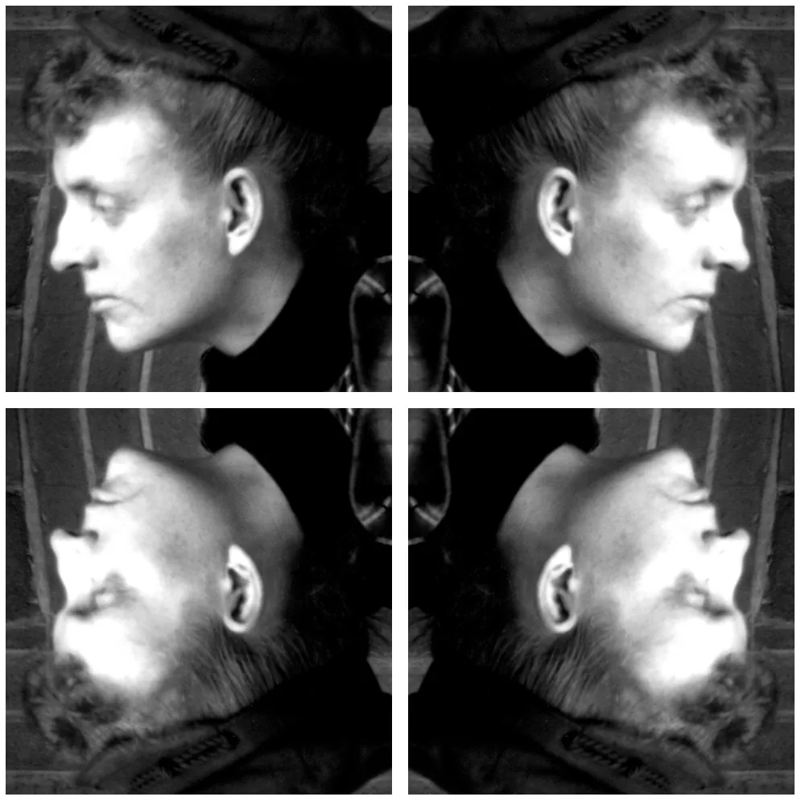
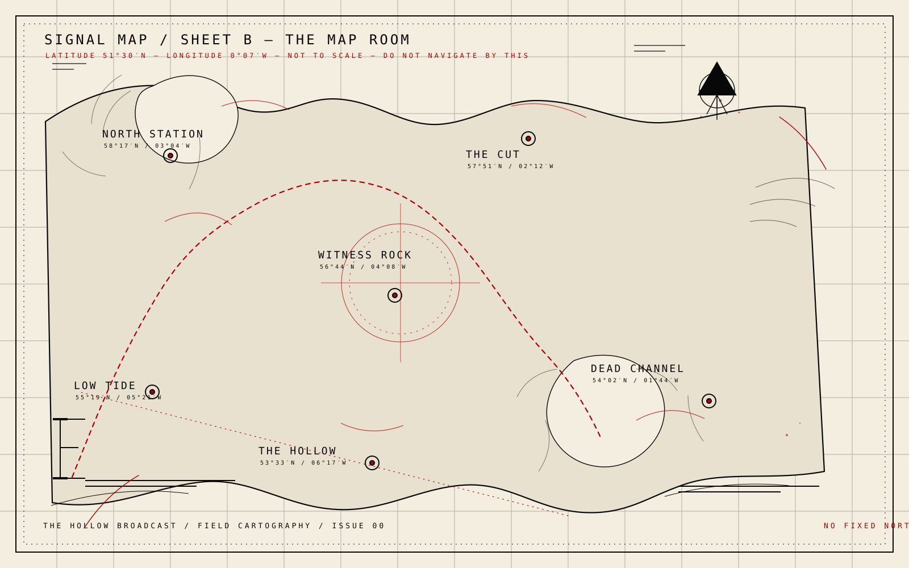
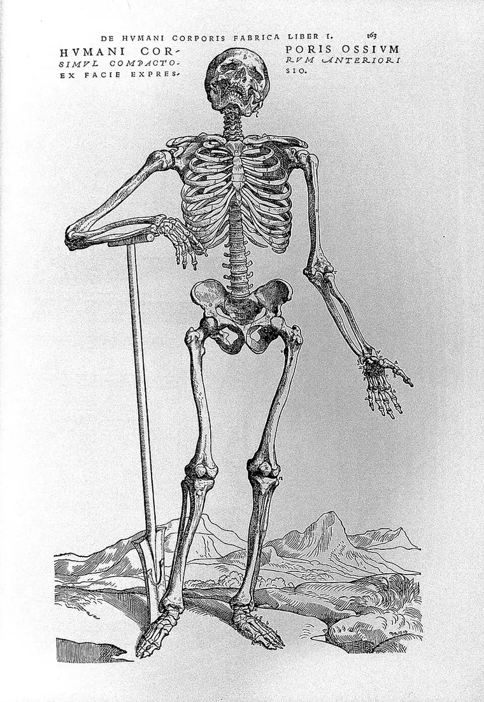
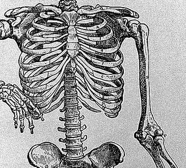

THE HOLLOW BROADCAST

A FIELD GUIDE TO MESSAGES THAT ARRIVE
AFTER THEIR SENDERS HAVE GONE.
Bodies, botanical errors, and instruments of observation. Reproduced badly on purpose. The archive is open, but the line is not clear.
A collection of bodies, botanical errors, and instruments of observation. Reproduced badly on purpose. Hover to disturb. Click to open the file.
CUTTINGTABLE
MAKE YOUR OWN
EVIDENCE.
The archive is not fixed. Move the pieces. Turn the type. There is no original arrangement; there is only the one you leave behind.
DO YOU THINK
A SIGNAL
CAN BE
INNOCENT?
ORDER LEAVE IT FACE DOWN
FRAGMENTS
NOTHING
ARRIVES
CLEAN.
I stopped trusting the sky the night it started sending me faxes.
The room was empty, but the microphone kept breathing.
Every archive is a haunted house with better lighting.
We mistook the hum for company.
We were wrong.
We kept listening.
FOUND ON A DISC LABELLED “DO NOT PLAY”. THE DISC WAS PLAYED.
APPARATUS
A SMALL MACHINE
FOR MAKING DECISIONS
YOU WILL LATER DENY.
Generate a mark. Do not interpret it. If the mark looks familiar, stop. The apparatus does not remember you; it only remembers the shape of your hand.
OPERATING INSTRUCTIONS
- 01 Draw a mark.
- 02 Read the name silently.
- 03 Keep it, or bury it.
- 04 Do not ask what it means.
NO. 001 / THE MACHINE IS AWAKE
THE MOUTH THAT REMEMBERS ITS OWN NAME
FREQUENCIES
Sound is generated in the browser. Headphones recommended; silence also acceptable. There is no end of track.
61.7HZ
CARRIER 02 / THE WITNESSSYNTHESISED LIVE / 44.1 KHZ / MONO / NO RECORDING
TRANSMISSIONS
THE LINE IS OPEN.
NOBODY IS SPEAKING.
Messages from an unknown sender. No archive is complete without its errors. Press receive. Do not reply.
- NO EARLIER TRANSMISSIONS.
THE LOG IS CLEAN.
MESSAGES ARE GENERATED LOCALLY. NOTHING IS SENT. NOTHING IS KEPT AFTER THE WINDOW CLOSES.
OTHER
WORLDS
SIX DOORS
THAT DO NOT BELONG
TO THIS BUILDING.
Open at your own risk. No affiliation, no algorithm, no endorsement. The internet is still a place you can get lost in.
LINKS OPEN IN A NEW WINDOW. THE BROADCAST IS NOT RESPONSIBLE FOR WHAT YOU FIND THERE.
CULTURAL
RESIDUE
EVERY CULTURE
LEAVES A STAIN.
Nine objects borrowed from the world's shared memory, stripped of their original images and filed under residue. The references are textual. The images are reworked residue. The stories are still missing their endings.
TEXTUAL ALLUSIONS ONLY. NO ORIGINAL CHARACTERS, LOGOS, OR FOOTAGE WERE USED. THE DRAWINGS ARE ORIGINAL. THE STORIES STAY WHERE THEY BELONG.
THE
MAP ROOM
YOU ARE HERE.
PROBABLY.
A map of six places that may not be on the same map. The coastline is invented. The coordinates are approximate. The red line is the only route we could agree on. Select a marker to open its field note.

MAP IS FICTIONAL / NOT TO SCALE / DO NOT NAVIGATE BY THIS. SIX LOCATIONS, ZERO ORIGINALS.
LAST
THINGS
WHAT REMAINS
AFTER THE SIGNAL.
An ossuary of borrowed bones and a reel that was never returned. The skeleton is older than the archive. The film is younger than the room. Both are filed under the same missing date.

THE BONE INDEX / SPECIMEN C.01
A BODY IS
A BORROWED
ARCHIVE.
The skeleton is not an illustration of death. It is an instruction manual for what remains: a cage, a handle, a hinge. The red thread is the only part that was added after the fact.
Plate: A. Vesalius, De humani corporis fabrica, 1543. Wellcome Collection, CC BY 4.0. Cropped and contrasted for this publication.

FRAME 01 / 00:00:01:04
BONES: VESALIUS, 1543 / FILM: LOST BEFORE TRANSFER / THE DEAD ARE NOT A GENRE.